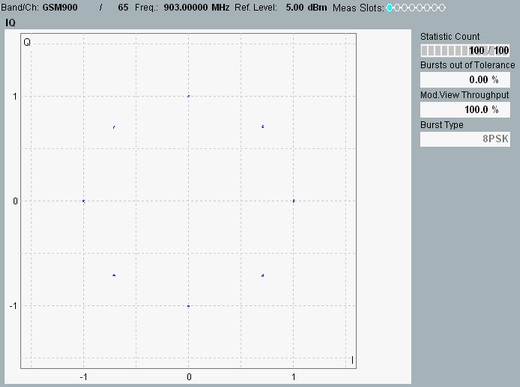

The constellation diagram shows the modulation symbols as points in the I/Q plane.

The constellation diagrams depend on the modulation type and on the rotation and I/Q filter settings; see "Additional Softkeys and Hotkeys". For an ideal signal, the 8PSK constellation diagram consists of eight points, located on a circle around the origin, with relative phase angles of 45 deg (see example above). The 16-QAM diagram shows 16 points in a regular, rectangular pattern. Constellation diagrams are normalized such that the average distance of all points from the origin is 1.
Constellation diagrams give a graphical representation of the signal quality and can help to reveal typical modulation errors causing signal distortions.
See also: "I/Q Constellation Diagram"
For additional screen elements, refer to "Common View Elements".